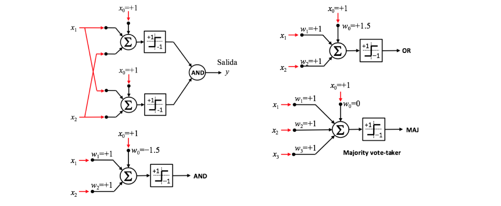

MADALINEs¶
30 min | Última modificación: Junio 22, 2019
Definición del problema¶
Se requiere diseñar una red neuronal que permita clasificar correctamente el siguiente problema:
Se desea construir un clasificador no lineal, conformado por la combinación de varios ADALINE, que permita clasificar correctamente los patrones presentados. El problema radíca en que un ADALINE puede clasificar clases linealmente separables, pero el problema presentado no pertenece a este tipo de problemas.
Metodología¶
MADALINE¶
Cualquier función conmutable no linealmente separable puede ser calculada por un modelo neuronal con dos capas, donde la primera capa tiene \(m\) unidades de entrada que calculan \(z_1\), \(z_2\), …, \(z_m\) variables intermedias, y la segunda capa una sola unidad.
La siguiente figura presenta el esquema típico de una MADALINE para dos entradas.

La MADALINE surge directamente del caso anterior, al considerar que la neurona de salida usa una función lógica predeterminada.

Algoritmo MRI o MADALINE Rule I¶
Hay una capa de ADALINEs y una única neurona ADALINE de salida de pesos fijos y no adaptables que implementa una operación lógica (OR, AND, MAJ, etc). El objetivo es entrenar los pesos de las capas de entrada.
Los patrones son presentados de uno en uno en una secuencia aleatoria.
Los pesos son inicializados en valores aleatorios pequeños.
Si la salida de MADALINE es igual a la deseada no hay adaptación para ese patrón.
Si la salida difiere de la deseada se adaptan los pesos de las conexiones de las ADALINE necesarias de la capa de entrada, de acuerdo con la operación lógica de la adaline de salida.
Se escogen las ADALINE con \(s(k)\) más cercana a cero.
La corrección se realiza mediante alguno de los algoritmos expuestos.
Algoritmo MRII o MADALINE Rule II¶
Tiene una capa de adalines de entrada y una capa de adalines de salida. Cada adaline de entrada propaga su señal a todas las adalines de la capa de salida.
Todos los pesos de las adalines son adaptables.
Al presentarse un error se ensayan correcciones en la capa de entrada intentado reducir el error. Si no hay éxito, se modifican los pesos de la capa de salida usando el algoritmo LMS.
El algoritmo puede converger a un óptimo local.
Actividad.— Solucione el problema planteado al inicio de este tutorial.